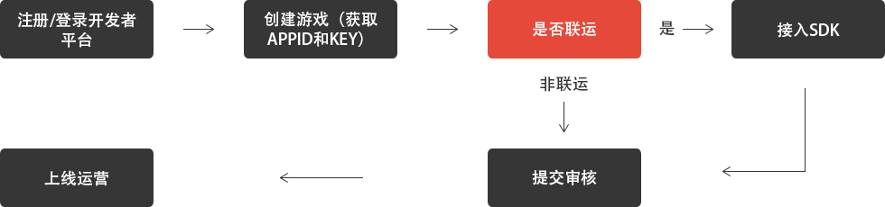

-
1.接入准备
新游接入前，请先到牛丸开发者平台（http://dev.niuwan.net/）注册登录后自助申请appid和key（游戏唯一识别），依次操作：我的游戏>未上线游戏>创建游戏，填写游戏基本信息保存后即可获得appid和key，可在该游戏设置里查看。
-
2.接入中
SDK接入过程请仔细阅读NiuWan_GameSDK接入文档，如您在接入期间仍有任何技术问题可以在对接的QQ讨论组中咨询。也可以邮件至niuwanservice@163.com，邮件标题务必注明游戏名称，技术同事会在1～3个工作日内回复。
-
3.接入完毕
游戏接入SDK完毕后，请登录牛丸开发者平台（http://dev.niuwan.net/），依次操作：我的游戏>未上线游戏>提交审核>完善资料并提交，请确保接入SDK的游戏的appid、key和提交审核的appid、key保持一致，否则审核无法通过。
提交审核前，请务必确认已经按照测试文档内测无误后再提交审核，确保游戏顺利上线运营。
- 
其它
1.游戏审核通过并上线后，可在【我的游戏>已上线游戏】中更新游戏，重新提交审核，审核通过后更新新版本。
-
2.如果想要下线或者删除游戏，请联系客服QQ：3419678369或者邮件至niuwanservice@163.com，并按照以下格式发送：
- 【下架/删除】【游戏名称】【CP名称】 【 时间】（立即下架/删除或者指定时间）
-
版本号 发布时间 本期更新说明 v1.0.0 2016-05-30 1.牛丸账号登录游戏
2.充值牛丸币
3.购买游戏道具
4.账户中心（修改资料，查看账单等） - 注意：接入牛丸SDK，需要申请appid和key，请先注册成为开发者并创建游戏。
SDK接入过程请仔细阅读SDK接入文档(NiuWan_GameSDK)，如您在接入期间仍有任何技术问题可以直接在对接的QQ讨论组中直接咨询。
也可以邮件至niuwanservice@163.com，邮件标题务必注明游戏名称，技术同事会在1～3个工作日内回复。